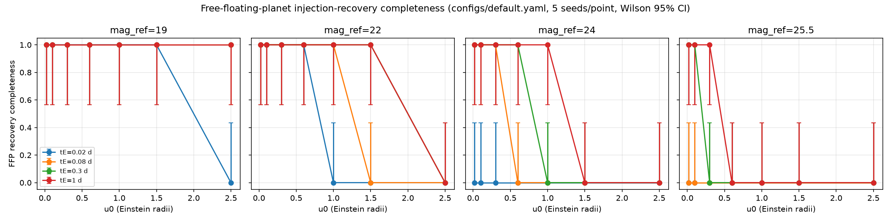
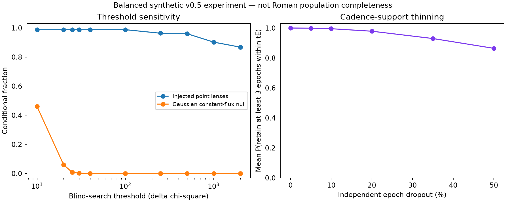

Data source notes
SHA-256, LF-normalised text
abce5e66ca50b75a74a4cf82de931049562ef71f0a07b435d9f0431c5fa68d3bBrowse 13 versioned evidence files. Table previews simply display stored rows. Consult the project report for the source, processing steps, and inference assumptions.


abce5e66ca50b75a74a4cf82de931049562ef71f0a07b435d9f0431c5fa68d3bc9baca8d340e178d6453d3bd3eed07753c8d5b2abdcfd20b172be93c38f505c3aac2f6872a5b66c2fac34cadd908999da457ed3ad5419b426f072f94baf8202884459c5544ffac424b63de2d33cdc8a05a4c262df220fbab6dff1abf0e2ef0f6692d5c58cee3040ccc32d722d9afe90d1265459b752f4cf5d4b78d89e107406c22ca566c40d0d71dd8182494229cea60ee5e56794a82b4285cba44957aa5729a6344e76189cb48d673c27493c9ad6c9f77e5ff2d1d5298ad810d86664364abc302e5efa0ba416a0aa642eb65b736e52310c5c36ba9153d15063525c6172ecb7b| dropout_fraction | minimum_retained_epochs | mean_retention_probability | events_below_requirement_before_dropout | n_injections |
|---|---|---|---|---|
| 0.0 | 3 | 1.0 | 0 | 900 |
| 0.05 | 3 | 0.9989959895833335 | 0 | 900 |
| 0.1 | 3 | 0.9954299999999899 | 0 | 900 |
| 0.2 | 3 | 0.978693333234004 | 0 | 900 |
61caf3feb0ac41c4db8f7494a779904dde822dd73567685f121deabb43d7a4eb| mag_ref | tE | endpoint | n_trials | n_success | completeness | ci_low |
|---|---|---|---|---|---|---|
| 19.0 | 0.02 | event_detected | 75 | 75 | 1.0 | 0.9512761575171942 |
| 19.0 | 0.08 | event_detected | 75 | 75 | 1.0 | 0.9512761575171942 |
| 19.0 | 0.3 | event_detected | 75 | 75 | 1.0 | 0.9512761575171942 |
| 19.0 | 1.0 | event_detected | 75 | 75 | 1.0 | 0.9512761575171942 |
8878de410d861b7dcc5c90a200499491d78d6d6d474ceade91e3295a9f3f3456365ca2b626552480c2acde79281e53e9c135b202f177442d30dc4753c4b712941605caf625b131754427982746fc85fb5749119e2074568e3e473937ffd42e49a9ee7ff613b1a9afe209ecd3b7c33f36fe7bb427fce8e83f71d07564d3306c2cSHA-256 values verify the stored files. They do not independently validate the scientific analysis. Rebuild this page with python scripts/evidence_catalog.py followed by python scripts/render_evidence_page.py.